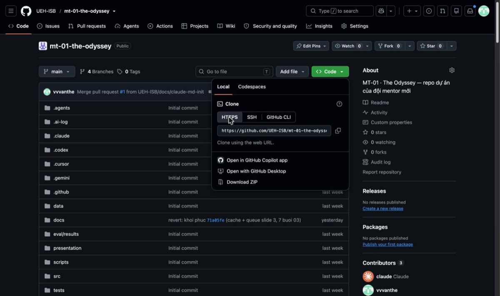

Phần 0Chuẩn bị máy trước khi đọc tiếp
Năm chủ đề của buổi 01 đều là thao tác tay. Không cài đủ bốn thứ dưới đây thì đọc chỉ là đọc, và buổi 02 sẽ không chạy được.
| Thứ cần có | Vì sao | Kiểm tra bằng cách nào |
|---|---|---|
| Terminal | Nơi bạn ra lệnh cho máy. macOS và Linux có sẵn; Windows dùng Git Bash đi kèm Git. | Mở được cửa sổ có dấu nhắc lệnh |
| Git | Công cụ lưu lịch sử thay đổi của mã nguồn và tài liệu. | git --version |
| VS Code | Trình soạn thảo để đọc và sửa file, có sẵn bản xem trước Markdown. | code --version |
| Tài khoản GitHub | Danh tính của bạn trên repo đội. Mọi commit đều ghi tên bạn. | Đăng nhập được github.com |
Kiểm tra một lượt
git --version git version 2.39.5 (Apple Git-154) code --version 1.95.3 git config --global user.name Nguyen Van A git config --global user.email a.nguyen@example.com
Hai lệnh cuối là khai tên. Git đóng tên và email này vào từng commit, nên nếu chưa khai, lịch sử repo sẽ không biết ai làm gì. Khai một lần cho cả máy:
git config --global user.name "Nguyen Van A" git config --global user.email "a.nguyen@example.com"
Dùng đúng email đã gắn vào tài khoản GitHub. Dùng email khác thì commit vẫn lên được, nhưng GitHub không nhận ra là của bạn — ảnh đại diện mất, và phần đóng góp không được tính cho bạn.
Phần 1Terminal: nơi bạn ra lệnh cho máy
Terminal là một cửa sổ bạn gõ chữ vào và máy làm. Không có nút bấm, không có menu. Đổi lại, mọi việc đều gọi tên được — nên đó cũng là ngôn ngữ duy nhất mà một agent có thể đưa cho bạn để bạn chạy lại y nguyên.
1.1 · Mở nó ra
Cmd + Space → gõ Terminal → EnterGit Bash (cài cùng Git). Đừng dùng Command Prompt cũ.Ctrl + ` (dấu huyền, bên trái số 1)1.2 · Đọc dòng nhắc lệnh
Dòng máy in ra trước khi bạn gõ gọi là prompt (dấu nhắc lệnh). Nó cho bạn biết bạn đang đứng ở đâu — và 90% lỗi của người mới là chạy lệnh đúng ở thư mục sai.
Prompt nói gì
an@MacBook-Pro mt-01-the-odyssey % │ │ │ └ hết prompt, phần bạn gõ bắt đầu ở đây │ │ └ thư mục bạn đang đứng ← quan trọng nhất │ └ tên máy └ tên người dùng
Trong sổ tay này, mọi khối màu đen đều viết lệnh bằng màu vàng và kết quả máy in ra bằng màu xám. Bạn chỉ gõ phần màu vàng.
1.3 · Sáu lệnh chạy được 90% công việc
| Lệnh | Đọc là | Làm gì |
|---|---|---|
pwd | print working directory | In ra đường dẫn thư mục đang đứng. Lệnh đầu tiên khi bạn không chắc mình ở đâu. |
ls | list | Liệt kê file và thư mục ở đây. |
ls -la | list, long, all | Liệt kê dạng bảng, kèm cả file ẩn (tên bắt đầu bằng dấu chấm, ví dụ .git, .env). |
cd <thư-mục> | change directory | Đi vào một thư mục. |
cd .. | Lùi ra thư mục cha, một cấp. | |
cat <file> | concatenate | In toàn bộ nội dung một file ra màn hình. |
Một phiên làm việc thật
pwd /Users/an ls Desktop Documents Downloads Projects cd Projects pwd /Users/an/Projects ls -la total 0 drwxr-xr-x 4 an staff 128 Oct 29 09:12 . drwxr-xr-x 22 an staff 704 Oct 29 09:10 .. drwxr-xr-x 18 an staff 576 Oct 29 09:12 mt-01-the-odyssey cd mt-01-the-odyssey cat README.md # MT-01 — The Odyssey ... cd .. pwd /Users/an/Projects
1.4 · Đường dẫn: bốn ký hiệu phải nhớ
| Ký hiệu | Nghĩa | Ví dụ |
|---|---|---|
~ | Thư mục nhà của bạn | cd ~ → về /Users/an |
. | Thư mục hiện tại | code . → mở thư mục này bằng VS Code |
.. | Thư mục cha | cd ../.. → lùi hai cấp |
/ | Dấu phân cấp | cd docs/giao-trinh |
Đường dẫn bắt đầu bằng / hoặc ~ là tuyệt đối — chạy ở đâu cũng
đến đúng chỗ. Đường dẫn không bắt đầu bằng hai ký tự đó là tương đối — nó tính từ nơi
bạn đang đứng, nên cd docs chỉ chạy được khi trong thư mục hiện tại có
docs.
1.5 · Bốn thứ giúp bạn gõ ít đi
| Phím | Tác dụng |
|---|---|
Tab | Gõ vài chữ đầu rồi nhấn Tab, máy điền tiếp tên file/thư mục. Nếu nó không điền, nghĩa là cái tên đó không tồn tại ở đây — một cách kiểm tra chính tả miễn phí. |
↑ / ↓ | Lật lại các lệnh đã gõ. Dùng liên tục khi lặp một chu trình. |
Ctrl + C | Dừng lệnh đang chạy. Lệnh bị treo, server đang chạy — bấm cái này. |
clear hoặc Ctrl + L | Xoá màn hình cho sạch. Không xoá gì khác. |
1.6 · Đọc lỗi — kỹ năng quan trọng nhất của buổi 01
Terminal không có hộp thoại báo lỗi. Nó in chữ, nhiều chữ, và dòng quan trọng thường không phải dòng cuối. Quy tắc đọc:
- Tìm dòng có chữ
ERROR, hoặc dòng cuối của một khốiTraceback. - Bỏ qua mọi dòng bắt đầu bằng
[notice]vàWARNING. Chúng là lời nhắc, không phải lỗi. - Đọc nguyên văn. Đừng đoán. Nếu không hiểu, copy đúng dòng đó đưa cho agent và hỏi.
Bẫy kinh điển — lỗi nằm ở giữa, không phải ở cuối
pip install -e ".[dev]" Obtaining file:///Users/an/Projects/mt-01-the-odysseyERROR: file:///Users/an/Projects/mt-01-the-odyssey does not appear to be aPython project: neither 'setup.py' nor 'pyproject.toml' found.[notice] A new release of pip is available: 24.0 -> 24.2 [notice] To update, run: pip install --upgrade pip
Hai dòng [notice] ở dưới cùng khiến người mới tưởng lệnh chỉ nhắc cập nhật.
Thật ra lệnh đã thất bại: repo không có pyproject.toml.
| Lỗi thường gặp | Nghĩa thật | Làm gì |
|---|---|---|
command not found | Máy không có chương trình đó, hoặc gõ sai tên. | Kiểm tra chính tả; nếu đúng thì chưa cài. |
No such file or directory | Đường dẫn sai, hoặc bạn đang đứng sai thư mục. | pwd rồi ls. Dùng Tab để gõ tên. |
Permission denied | Không có quyền với file/thư mục đó. | Xem lại mình đang ghi vào đâu. Đừng phản xạ gắn sudo. |
not a git repository | Thư mục này không phải repo. | cd vào thư mục repo (nơi có .git). |
Bài tập 1.1 · 8 phút
Tự định vị trong máy của mình
- Mở Terminal. Chạy
pwd, ghi lại đường dẫn. - Tạo thư mục làm việc:
mkdir -p ~/Projectsrồicd ~/Projects. - Chạy
ls -la. Đếm xem có bao nhiêu dòng bắt đầu bằngd(là thư mục). - Gõ
cd Prorồi nhấnTab. Quan sát máy điền tiếp hay không. - Cố ý gõ sai:
cd khong-ton-tai. Đọc nguyên văn lỗi, ghi lại.
Xong khi bạn nói được câu: “Tôi đang ở ___, thư mục này có ___ thư mục con.”
Phần 2GitHub: nơi mã nguồn của đội sống
Trước khi gõ lệnh nào, phải tách được hai thứ hay bị gộp làm một.
| Git | GitHub | |
|---|---|---|
| Là gì | Một chương trình chạy trên máy bạn | Một website |
| Làm gì | Ghi lại lịch sử thay đổi file | Giữ một bản sao để cả đội dùng chung, kèm chỗ bàn luận |
| Không có mạng | Vẫn chạy bình thường | Không vào được |
| Thay thế được bằng | Không có gì tiện hơn | GitLab, Bitbucket… |
Nói gọn: Git là cái máy, GitHub là cái kho công cộng. Buổi 01 dùng cả hai, và mọi
lệnh git … bạn gõ đều là Git — chỉ có push, pull,
clone là thực sự nói chuyện với GitHub.
2.1 · Mười từ phải hiểu trước khi làm
| Từ | Nghĩa trong công việc hằng ngày |
|---|---|
| repository (repo) kho mã | Một thư mục được Git theo dõi. Repo đội ta: UEH-ISB/mt-01-the-odyssey. |
| commit điểm lưu | Một lần chụp ảnh trạng thái file, kèm lời nhắn giải thích vì sao. Không bao giờ mất. |
| branch nhánh | Một dòng lịch sử song song, để bạn sửa mà không ảnh hưởng người khác. |
| main | Nhánh chính — bản “thật”. Mọi thứ vào được đây đều đã qua review. |
| remote / origin | Bản repo nằm trên GitHub. origin là tên mặc định mà máy bạn gọi nó. |
| clone | Tải toàn bộ repo (kèm cả lịch sử) về máy. Làm một lần. |
| pull | Lấy phần người khác đã thêm trên GitHub về máy. Làm thường xuyên. |
| push | Đẩy commit của bạn lên GitHub. |
| pull request (PR) | Một lời đề nghị: “xin gộp nhánh của tôi vào main”. Là chỗ để người khác đọc và góp ý. |
| review | Người khác đọc PR của bạn rồi Approve (đồng ý) hoặc Request changes (yêu cầu sửa). |
2.2 · Đọc một trang repo
| Tab | Bạn đến đây để |
|---|---|
| Code | Xem file. Hộp chọn bên trái cho đổi nhánh — mặc định là main. Nút Code xanh chứa đường link để clone. |
| Issues | Danh sách việc cần làm và lỗi cần sửa, mỗi việc một số thứ tự. |
| Pull requests | Danh sách đề nghị gộp đang chờ. Nơi bạn vào để review người khác. |
| Actions | Máy tự chạy kiểm thử mỗi khi có PR. Dấu ✓ xanh là qua, ✗ đỏ là hỏng. |
| Settings | Quyền truy cập, luật nhánh. Chỉ người quản trị repo mở được. |
2.3 · HTTPS hay SSH
Nút Code xanh cho hai dạng đường link. Chọn một, và dùng nó suốt.
# HTTPS — dễ bắt đầu; GitHub sẽ hỏi tên đăng nhập và một Personal Access Token https://github.com/UEH-ISB/mt-01-the-odyssey.git # SSH — cài khoá một lần, sau đó không phải nhập gì nữa git@github.com:UEH-ISB/mt-01-the-odyssey.git
Khi GitHub hỏi mật khẩu trong terminal, nó không nhận mật khẩu đăng nhập website. Nó cần một Personal Access Token — tạo ở Settings → Developer settings → Personal access tokens. Token là mật khẩu: không dán vào file trong repo, không gửi trong chat nhóm.
Bài tập 2.1 · 10 phút
Nhận diện repo đội
- Mở
github.com/UEH-ISB/mt-01-the-odyssey. - Đếm số nhánh đang có (hộp chọn nhánh ở tab Code).
- Mở tab Pull requests, ghi lại số PR đang mở.
- Mở tab Actions, xem lần chạy gần nhất qua hay hỏng.
- Vào
docs/giao-trinh/và mở00-README.mdngay trên web.
Xong khi bạn nói được repo có mấy nhánh, mấy PR đang mở, và lần kiểm thử gần nhất kết quả thế nào.
Phần 3Kéo project từ link Git về máy
Một lệnh duy nhất, nhưng phải chạy ở đúng chỗ và phải kiểm tra sau khi chạy.
3.1 · Chọn chỗ đặt trước khi clone
git clone tạo một thư mục mới ngay tại nơi bạn đang đứng. Nên luôn
cd về thư mục làm việc trước, nếu không repo sẽ nằm rải rác trong Downloads
hay Desktop.
Clone — và bốn lệnh kiểm tra ngay sau đó
mkdir -p ~/Projects && cd ~/Projects
git clone https://github.com/UEH-ISB/mt-01-the-odyssey.git
Cloning into 'mt-01-the-odyssey'...
remote: Enumerating objects: 412, done.
Receiving objects: 100% (412/412), 1.84 MiB | 3.2 MiB/s, done.
Resolving deltas: 100% (118/118), done.
cd mt-01-the-odyssey
git status
On branch main
Your branch is up to date with 'origin/main'.
nothing to commit, working tree clean
git remote -v
origin https://github.com/UEH-ISB/mt-01-the-odyssey.git (fetch)
origin https://github.com/UEH-ISB/mt-01-the-odyssey.git (push)
git log --oneline -5
1f57521 revert: khoi phuc cache + queue slide 3, 7 buoi 03
7d72b71 docs: bo slide 9 khoi deck buoi 01
a50e1b8 fix: hop pass check bi cat o slide tong ket buoi 02
d122f0c docs: bon file cho moi buoi
e09bac1 docs: giam co chu slide tong ket
git ls-files | wc -l
104
git status — tôi đang ở nhánh nào, có gì chưa lưu?
git remote -v — máy tôi đang nối với repo nào trên GitHub?
git log --oneline -5 — năm việc gần nhất đội đã làm là gì?
git ls-files | wc -l — repo đang theo dõi bao nhiêu file?
3.2 · Lấy đường link ở đâu trên GitHub

<> Code màu xanh ở góc phải trên danh sách file → chọn
tab HTTPS → bấm biểu tượng hai ô vuông bên phải ô link để sao chép. Dán cái đó
vào sau git clone. Tab SSH cho link dạng git@github.com:…,
chỉ dùng khi bạn đã cài khoá SSH.3.3 · clone một lần, pull mãi mãi
Đây là chỗ người mới nhầm nhiều nhất: clone lại lần nữa không cập nhật repo cũ, nó tạo thêm một bản sao thứ hai và bạn sẽ sửa vào bản sai.
| Lệnh | Dùng khi | Bao lâu một lần |
|---|---|---|
git clone <url> | Máy chưa có repo này | Một lần duy nhất |
git pull | Đã có repo, muốn lấy phần mới của người khác | Mỗi lần bắt đầu làm việc |
cd ~/Projects/mt-01-the-odyssey git pull remote: Enumerating objects: 9, done. Updating 1f57521..3b8c0a2 Fast-forward docs/giao-trinh/00-README.md | 12 ++++++++---- 1 file changed, 8 insertions(+), 4 deletions(-)
Fast-forward nghĩa là Git chỉ cần kéo bạn tiến lên, không có gì xung đột.
Đây là kết quả bạn muốn thấy.
3.4 · Khi clone thất bại
| Máy in ra | Nghĩa | Cách xử lý |
|---|---|---|
Repository not found | Sai đường link, hoặc repo riêng tư và bạn chưa được mời. | Soát lại link; nếu đúng thì nhờ người quản trị thêm bạn làm collaborator. |
destination path ... already exists | Thư mục đó đã có. Bạn đã clone rồi. | cd vào nó và git pull, đừng clone lại. |
Authentication failed | Nhập mật khẩu website thay vì token. | Tạo Personal Access Token và dùng nó làm mật khẩu. |
Permission denied (publickey) | Dùng link SSH nhưng chưa nạp khoá. | Đổi sang link HTTPS, hoặc cài khoá SSH. |
Bài tập 3.1 · 12 phút
Clone repo đội và tự chứng minh là đã clone đúng
cd ~/Projectsrồi clone repo đội.cdvào repo, chạygit status. Ghi lại tên nhánh.- Chạy
git log --oneline -5. Ghi lại lời nhắn của commit mới nhất. - Chạy
git ls-files | wc -l. Ghi lại con số. - Chạy
ls docs/giao-trinh/. Kể tên các file bạn thấy.
Xong khi bạn đưa ra được bốn bằng chứng: tên nhánh, commit mới nhất, số file được theo dõi, nội dung thư mục giáo trình.
Phần 4File Markdown và cách sửa bằng VS Code
Gần như toàn bộ tài liệu của The Odyssey là file .md. Lý do: đó là
văn bản thuần, nên Git so sánh được từng dòng — và agent đọc được mà không cần mở ứng dụng nào.
4.1 · Markdown là gì
Markdown là quy ước dùng vài ký tự thường để ra định dạng. Bạn gõ **chữ**, khi
hiển thị nó thành chữ. File vẫn là văn bản thuần — mở bằng cat cũng đọc được.
So với Word: Word nhúng định dạng vào một tệp nhị phân, nên Git chỉ biết “file đã đổi”.
Markdown để Git chỉ đúng dòng nào đổi, chữ nào thêm vào. Đó là lý do cả bộ giáo
trình nằm trong .md chứ không phải .docx.
4.2 · Toàn bộ cú pháp bạn cần
| Bạn gõ | Hiện ra | Dùng để |
|---|---|---|
# Tiêu đề | Tiêu đề cấp 1 | Mỗi file đúng một cái, ở dòng đầu |
## Mục · ### Mục con | Tiêu đề cấp 2, 3 | Chia phần |
**đậm** | đậm | Nhấn một thuật ngữ |
*nghiêng* | nghiêng | Ghi chú nhẹ |
`mã` | mã | Tên lệnh, tên file, tên biến |
- mục | Danh sách gạch đầu dòng | Liệt kê không thứ tự |
1. mục | Danh sách số | Các bước có thứ tự |
- [ ] việc | Ô đánh dấu | Checklist — GitHub hiện thành ô tích được |
> câu | Khối trích dẫn | Dẫn lời, ghi chú quan trọng |
[chữ](đường-dẫn) | Liên kết | Trỏ sang file khác trong repo |
 | Ảnh | Chèn hình |
--- | Đường kẻ ngang | Ngăn hai phần |
| a | b ||---|---| | Bảng | Dữ liệu có cột |
Khối mã — ba dấu huyền mở, ba dấu huyền đóng
Gõ trong file .md: ```bash git status git log --oneline -5 ``` Chữ "bash" sau ba dấu huyền cho GitHub biết tô màu theo ngôn ngữ nào.
Thiếu dòng trống. Trước một tiêu đề, một bảng hay một danh sách phải có một dòng
trống, nếu không nó dính vào đoạn trên và không hiện đúng.
Đường dẫn tương đối tính từ chỗ đặt file. Một liên kết viết trong
docs/giao-trinh/slide/x.md trỏ tới file ở docs/giao-trinh/ phải là
../ten-file.md, không phải ten-file.md.
4.3 · VS Code: sáu thao tác
| Việc | Cách làm | Ghi chú |
|---|---|---|
| Mở cả repo | Trong terminal: code . | Luôn mở thư mục, đừng mở lẻ từng file — Git chỉ hoạt động khi VS Code biết gốc repo. |
| Tìm file theo tên | Cmd/Ctrl + P → gõ tên | Nhanh hơn bấm trong cây thư mục rất nhiều. |
| Xem bản hiển thị | Cmd/Ctrl + Shift + V | Mở bản xem trước Markdown cạnh file. |
| Lưu | Cmd/Ctrl + S | Dấu chấm tròn ở tên tab nghĩa là chưa lưu. |
| Mở terminal trong VS Code | Ctrl + ` | Nó tự đứng ở gốc repo — khỏi phải cd. |
| Xem mình đã sửa gì | Biểu tượng Source Control ở cột trái | Bấm một file để xem từng dòng thêm/xoá. |
Lưu trước khi commit. Git chỉ thấy phần đã ghi xuống đĩa. Sửa mà chưa
Cmd+S thì git status không thấy gì, và bạn sẽ commit một thay đổi
rỗng rồi tưởng mình đã làm xong.
Bài tập 4.1 · 10 phút
Sửa một file Markdown và tự nhìn thấy thay đổi
- Trong repo:
code . Cmd/Ctrl+P→ mởdocs/giao-trinh/00-README.md.Cmd/Ctrl+Shift+Vđể mở bản xem trước, đặt cạnh file.- Tạo file mới
NHAP-<tên-bạn>.md, viết trong đó: một tiêu đề#, một đoạn có chữ đậm, một danh sách ba mục, một khối mãbash, và một bảng hai cột. - Lưu. Mở bản xem trước và kiểm tra cả năm thứ hiện đúng.
- Trong terminal chạy
git status. File mới phải xuất hiện ở mục Untracked files.
Xong khi bản xem trước hiện đúng cả năm kiểu định dạng, và git status nhìn thấy file của bạn.
Phần 5Làm việc nhóm bằng Git
Phần dài nhất, và là phần duy nhất bạn sẽ lặp lại mỗi ngày. Học nó như học một vòng lặp tám bước, không phải học tám lệnh rời rạc.
5.1 · Vì sao phải có nhánh
Cả bốn người cùng sửa main thì mỗi lần ai đó lưu, người khác lập tức bị ảnh
hưởng — và không ai kịp đọc trước khi nó thành bản thật. Nhánh giải quyết điều đó: bạn sửa
trong không gian riêng, xong rồi xin phép gộp vào.
Không ai tự merge pull request của chính mình. PR của bạn phải có một người khác bấm Approve. Đây là luật, không phải lời khuyên.
5.2 · Bước 1–2 · Cập nhật rồi tách nhánh
git switch main # chắc chắn đang đứng ở nhánh chính git pull # lấy phần mới nhất của đội — LÀM TRƯỚC khi tách nhánh git switch -c docs/an-sua-readme Switched to a new branch 'docs/an-sua-readme' git status On branch docs/an-sua-readme nothing to commit, working tree clean
-c là create: tạo nhánh mới rồi nhảy sang. Bỏ -c thì chỉ
chuyển sang nhánh đã có.
Đặt tên nhánh
| Dạng | Dùng khi | Ví dụ |
|---|---|---|
docs/<việc> | Sửa tài liệu | docs/an-them-muc-luc |
feat/<việc> | Thêm tính năng | feat/api-danh-gia |
fix/<việc> | Sửa lỗi | fix/test-asyncio |
Chữ thường, nối bằng dấu gạch ngang, không dấu tiếng Việt, không khoảng trắng. Tên nhánh hiện trong danh sách PR — người review đọc nó trước khi đọc mã.
5.3 · Bước 3–4 · Sửa, rồi chọn phần nào đem đi lưu
Giữa “đã sửa” và “đã commit” có một bước ở giữa, gọi là staging area (khu vực chờ).
git add đưa thay đổi vào khu vực chờ; git commit mới thật sự lưu.
Bước trung gian này để bạn commit đúng những gì liên quan, thay vì gom tất cả vào một cục.
git status — đọc ba vùng
git status
On branch docs/an-sua-readme
Changes to be committed: ← đã add, sẽ vào commit tới
modified: docs/giao-trinh/00-README.md
Changes not staged for commit: ← đã sửa, CHƯA add
modified: README.md
Untracked files: ← Git chưa từng biết file này
NHAP-an.md
Xem chính xác mình đã đổi gì, rồi mới add
git diff diff --git a/docs/giao-trinh/00-README.md b/docs/giao-trinh/00-README.md @@ -12,6 +12,7 @@ | buoi-01.md | Buổi 01 |-| buoi-02.md | Buổi 02 |+| buoi-02.md | Buổi 02 — môi trường, Git, lỗi thật | git add docs/giao-trinh/00-README.md # add đúng một file git add . # add mọi thứ — chỉ dùng khi đã đọc git status
git add .
Nó gom mọi file đang thay đổi, kể cả thứ bạn không có ý đẩy lên — file nháp, file khoá
bí mật, thư mục tạm. Đọc git status trước, mỗi lần.
5.4 · Bước 5 · Commit, kèm một lời nhắn người khác đọc được
git commit -m "docs: mo ta ro hon cho buoi-02 trong bang muc luc" [docs/an-sua-readme 9a3f1c8] docs: mo ta ro hon cho buoi-02 trong bang muc luc 1 file changed, 1 insertion(+), 1 deletion(-)
| Tiền tố | Nghĩa |
|---|---|
docs: | Chỉ sửa tài liệu |
feat: | Thêm tính năng mới |
fix: | Sửa một lỗi |
test: | Thêm hoặc sửa kiểm thử |
chore: | Việc dọn dẹp, cấu hình |
Lời nhắn tốt nói vì sao, không nói đã bấm gì. docs: them bang tra lenh
cho mentor moi là tốt. update file, fix, asdf
là vô dụng — ba tháng sau không ai hiểu nữa.
git status sạch không có nghĩa là đã lưu hết
git status chỉ so sánh với những file Git đang theo dõi. Một file bị
.gitignore chặn, hay một file bạn chưa bao giờ git add, vẫn làm
git status im lặng. Muốn biết thật sự repo đang giữ những gì, dùng:
git ls-files | wc -l # repo đang theo dõi bao nhiêu file git ls-files | grep giao-trinh # file của tôi có nằm trong đó không git status --ignored # những gì đang bị .gitignore chặn
5.5 · Bước 6 · Push lên GitHub
git push -u origin docs/an-sua-readme Enumerating objects: 9, done. To https://github.com/UEH-ISB/mt-01-the-odyssey.git * [new branch] docs/an-sua-readme -> docs/an-sua-readme remote: Create a pull request for 'docs/an-sua-readme' on GitHub by visiting: remote: https://github.com/UEH-ISB/mt-01-the-odyssey/pull/new/docs/an-sua-readme
-u origin <nhánh> chỉ cần ở lần push đầu của nhánh đó — nó nối nhánh trên
máy với nhánh trên GitHub. Từ lần thứ hai, gõ git push là đủ.
GitHub in luôn đường link tạo PR. Copy nó, mở trình duyệt. Đó là cách nhanh nhất.
5.6 · Bước 7 · Mở pull request
- Mở đường link GitHub vừa in, hoặc vào tab Pull requests → New pull request.
- Kiểm tra hai hộp ở trên: base phải là
main, compare là nhánh của bạn. Sai chiều là PR vô nghĩa. - Tiêu đề: viết như lời nhắn commit — một câu, nói việc gì.
- Mô tả: ba dòng là đủ, theo mẫu dưới đây.
- Bên phải, ở Reviewers, chọn một người trong đội.
- Bấm Create pull request.
Mẫu mô tả PR — dán vào rồi điền
## Đã làm gì Mô tả lại dòng buoi-02 trong bảng mục lục của 00-README.md. ## Vì sao Dòng cũ chỉ ghi "Buổi 02", mentor mới không biết buổi đó dạy gì. ## Kiểm tra thế nào Mở docs/giao-trinh/00-README.md trên tab Files changed, xem bảng hiện đúng.
5.7 · Review PR của người khác
Review là một nửa công việc, không phải việc phụ. Bạn sẽ review nhiều hơn là được review.
- Mở PR → tab Files changed. Màu xanh là dòng thêm, màu đỏ là dòng xoá.
- Đưa chuột vào một dòng, bấm dấu + xanh để góp ý đúng dòng đó.
- Bấm Review changes ở góc trên phải, chọn một trong ba:
| Lựa chọn | Nghĩa | Dùng khi |
|---|---|---|
| Comment | Góp ý, chưa kết luận | Bạn có câu hỏi, chưa đồng ý cũng chưa phản đối |
| Approve | Đồng ý gộp | Bạn đã đọc hết và thấy đúng |
| Request changes | Yêu cầu sửa trước khi gộp | Có chỗ sai, hoặc thiếu bằng chứng đã kiểm tra |
① Mô tả PR có nói rõ vì sao, không chỉ đã đổi gì?
② Có cách nào tôi tự kiểm tra lại được — một lệnh, một đường dẫn, một ảnh?
③ Có file nào bị kéo vào mà không liên quan đến việc này?
Góp ý nhận xét mã, không nhận xét người. “Dòng này nên dùng đường dẫn tương đối” — tốt. “Bạn làm cẩu thả” — vô ích.
5.8 · Bước 8 · Merge, rồi dọn dẹp
Người review bấm Merge pull request, không phải người viết. Sau khi PR được gộp, chủ nhánh về máy làm ba việc:
git switch main git pull # lấy về phần vừa được gộp git branch -d docs/an-sua-readme # xoá nhánh đã xong việc ở máy Deleted branch docs/an-sua-readme (was 9a3f1c8).
Không xoá nhánh cũ thì sau ba tuần bạn có mười hai nhánh và không biết nhánh nào còn sống.
5.9 · Xung đột (conflict)
Xung đột xảy ra khi bạn và người khác sửa cùng một dòng của cùng một file. Git không tự đoán được ai đúng, nên nó dừng lại và hỏi bạn.
git pullCONFLICT (content): Merge conflict in docs/giao-trinh/00-README.mdAutomatic merge failed; fix conflicts and then commit the result.
Mở file đó bằng VS Code, bạn sẽ thấy dấu hiệu như sau:
<<<<<<< HEAD| buoi-02.md | Buổi 02 — môi trường, Git, lỗi thật | ← phần của BẠN=======| buoi-02.md | Buổi 02 — chuẩn bị môi trường | ← phần của NGƯỜI KHÁC>>>>>>> origin/main
- Quyết định giữ phần nào — hoặc viết lại một dòng gộp cả hai ý.
- Xoá sạch ba dòng dấu hiệu
<<<<<<<,=======,>>>>>>>. Sót một dấu là file hỏng. - Lưu, rồi
git add <file>vàgit commit.
git pull trước khi tách nhánh, và giữ mỗi PR nhỏ. PR sửa một file thì
gần như không bao giờ xung đột. PR sửa hai mươi file thì chắc chắn có.
Bài tập dưới đây cho cả bốn người điền vào cùng một bảng trong README.md.
Ai merge sau gần như chắc chắn gặp CONFLICT. Đó là chủ ý: xung đột đầu tiên
của bạn nên xảy ra ở một bảng đơn giản, lúc có người ngồi cạnh — không phải ở mã nguồn,
lúc một mình. Cách gỡ ở mục 5.9.
Bài tập 5.1 · 20 phút · làm theo cặp
Một vòng lặp đầy đủ, từ nhánh đến merge
- Cả hai:
git switch mainrồigit pull. - Cả hai: tách nhánh riêng,
git switch -c docs/<tên-bạn>-tu-gioi-thieu. - Cả hai: mở
README.mdở gốc repo, tìm bảng Đội ngũ. Điền đúng một dòng của mình — tên, tài khoản GitHub, vai mình nhận trong đội, và câu mình chưa rõ về MT-01. Không sửa dòng của người khác. - Cả hai:
git diffđể tự kiểm — chỉ được thấy một dòng đổi màu. Rồigit add README.md→git commit -m "docs: them <tên> vao bang Doi ngu"→git push -u origin <nhánh>. - Cả hai: mở PR vào
main, chọn người kia làm reviewer. - Đổi vai: mỗi người mở PR của người kia, đọc tab Files changed, để lại một góp ý đúng dòng, rồi bấm Approve.
- Người review bấm Merge pull request. Không ai merge PR của mình.
- Cả hai:
git switch main→git pull→git branch -d <nhánh>. - Cả hai:
git log --oneline -5. Phải thấy commit của cả hai người.
Xong khi bảng Đội ngũ trên main có dòng của cả hai người,
mỗi PR có đúng một người khác Approve, và git branch ở máy không còn nhánh tạm nào.
Phần 6Dùng Claude Code
Cả khoá học này dạy bạn xây một sản phẩm thật cùng với một agent. Nhưng agent chỉ hữu ích khi bạn đã biết năm phần trên — nếu không, bạn không có cách nào biết nó đang nói đúng hay đang đoán.
Năm phần đầu là nội dung đã trình bày ở buổi 01. Phần này chưa dạy trên lớp — thêm vào để bạn tự đọc trước, vì từ buổi 02 trở đi mọi bài tập đều làm cùng agent.
6.1 · Nó khác chat trên web ở chỗ nào
Claude Code đứng trong thư mục repo của bạn. Nó đọc được file, chạy được lệnh, sửa được file, và thấy kết quả lệnh. Bản chat trên trình duyệt thì không — bạn phải copy mọi thứ qua lại bằng tay.
cd vào repo trước, rồi mới gõ claude. Agent chỉ nhìn thấy
thư mục nó được mở trong đó. Mở sai chỗ thì nó không thấy file của bạn — và thay vì nói
“tôi không thấy”, nó sẽ đoán.
| Cách dùng | Hợp khi | Nhược |
|---|---|---|
CLI trong terminalclaude | Việc nhiều bước, chạy lệnh, đọc log. Là cách dùng chính của khoá này. | Xem diff dài hơi khó chịu mắt |
| Extension trên VS Code | Sửa tài liệu, xem thay đổi từng dòng ngay trong editor | Vẫn cần terminal cho Git |
6.2 · Chạy lần đầu
npm install -g @anthropic-ai/claude-code # cài một lần cho cả máy cd ~/Projects/mt-01-the-odyssey # LUÔN cd vào repo trước claude # lần đầu nó mở trình duyệt để bạn đăng nhập. Làm một lần.
Sau khi vào, dòng dưới cùng là khung bạn gõ yêu cầu. Gõ tiếng Việt được. Thoát bằng
/exit, hoặc nhấn Ctrl + C hai lần.
6.3 · claude --resume — nối lại phiên cũ
Đóng cửa sổ là agent quên sạch. Hôm sau mở lại, nó không nhớ hôm qua hai người đã bàn
gì. Đây là lý do --resume quan trọng hơn người mới tưởng: nó mở danh sách các
phiên cũ trong đúng repo này để bạn chọn một phiên mà đi tiếp.
Ba cách mở
claude # phiên mới, trắng trơn claude --continue # nối thẳng phiên GẦN NHẤT, không hỏi — viết tắt: claude -c claude --resume # hiện danh sách phiên cũ để chọn — viết tắt: claude -r
Màn hình --resume — chọn bằng phím mũi tên rồi Enter
Chọn một phiên để nối tiếp: ❯ 2 giờ trước 46 lượt sua bang Doi ngu trong README, mo PR hôm qua 12 lượt doc loi make test, pytest-asyncio 3 ngày trước 8 lượt clone repo, kiem tra git remote ↑↓ di chuyển · Enter chọn · Esc thoát
Một việc — một phiên. Làm xong bảng Đội ngũ thì đừng dùng lại phiên đó để đi hỏi
chuyện khác; mở phiên mới. Phiên càng dài và càng lẫn lộn nhiều việc, agent càng hay lấy
nhầm thông tin của việc cũ. Khi quay lại đúng việc đang dở, claude --resume và
chọn đúng dòng của nó.
Vài lệnh gạch chéo gõ ngay trong phiên
/help | Liệt kê toàn bộ lệnh đang có — dùng cái này thay vì học thuộc |
/clear | Xoá trí nhớ của phiên, bắt đầu lại từ đầu mà không phải thoát |
/exit | Thoát |
6.4 · Extension Claude trên VS Code
Trong VS Code: biểu tượng Extensions ở cột trái → gõ Claude → Install.
Mở panel bằng biểu tượng Claude vừa xuất hiện trên cột trái.
git diff. Nhưng commit,
push, mở PR thì vẫn làm ở terminal như Phần 5.6.5 · Bốn cách ra lệnh để agent không đoán
| Quy tắc | Đừng viết | Hãy viết |
|---|---|---|
| Đưa đường dẫn, đừng tả | “sửa cái file readme kia” | “sửa README.md ở gốc repo, bảng Đội ngũ, dòng số 2” |
| Bắt dẫn nguồn | “buổi 02 dạy gì?” | “đọc docs/giao-trinh/buoi-02.md và trích nguyên văn dòng nói về điều đó” |
| Đòi lệnh tự kiểm | “xong chưa?” | “cho tôi một lệnh để tôi tự xác minh việc này đã xong” |
| Dán nguyên văn lỗi | “nó báo lỗi gì đó” | dán cả khối lỗi, từ dòng lệnh đến dòng ERROR |
6.6 · Ba việc không giao cho agent
① Đừng để agent commit và push thay bạn khi bạn chưa đọc git diff.
Tên bạn nằm trên commit đó. Người review sẽ hỏi bạn, không hỏi agent.
② Đừng dán khoá, token, mật khẩu vào khung chat. Cần khoá thì để nó trong
.env — file đó đã bị .gitignore chặn sẵn.
③ Đừng tin agent khi nó nói về trạng thái repo. Nó hay nói chắc nịch những con số nó chưa hề đếm.
Agent đoán — và cách bắt quả tang trong 5 giây
Bạn hỏi: “repo này đang theo dõi bao nhiêu file?”Agent: “Repo có khoảng 80 file.” ← nó ĐOÁN, chưa chạy lệnh nàoBạn tự chạy: git ls-files | wc -l 106 # con số này đổi theo thời gian — cái đúng là cái BẠN vừa chạy Câu đúng phải hỏi ngay từ đầu: “chạy lệnh để đếm, rồi dán nguyên văn kết quả cho tôi”
Bài tập 6.1 · 12 phút
Bắt quả tang agent đoán — rồi bắt nó sửa cách trả lời
cdvào repo đội, chạyclaude.- Hỏi nguyên văn: “repo này đang theo dõi bao nhiêu file?” — ghi lại câu trả lời.
- Thoát ra terminal, tự chạy
git ls-files | wc -l. So hai con số. - Vào lại bằng
claude --resume, chọn đúng phiên vừa rồi. Yêu cầu: “từ giờ, mọi câu hỏi về trạng thái repo, hãy chạy lệnh trước rồi dán nguyên văn kết quả.” - Hỏi lại cùng câu hỏi. Lần này nó phải chạy lệnh trước khi trả lời.
- Hỏi tiếp một câu có bẫy: “file
docs/giao-trinh/buoi-05.mdnói gì?” — file đó không tồn tại. Agent phải nói là không có, chứ không được bịa.
Xong khi bạn chỉ ra được một chỗ cụ thể agent nói sai về repo,
và nối lại được phiên cũ bằng claude --resume thay vì mở phiên trắng.
Phần 7Khi làm sai: cách lùi lại
Git được thiết kế để hầu hết sai sót đều gỡ được. Điều kiện duy nhất: biết mình
đang ở bước nào trong vòng lặp. Chạy git status trước, luôn luôn.
| Tình huống | Lệnh | Hậu quả |
|---|---|---|
| Sửa một file rồi muốn bỏ hết, chưa add | git restore <file> | Mất phần vừa sửa, không lấy lại được |
Đã add nhưng chưa commit, muốn bỏ ra khỏi khu vực chờ | git restore --staged <file> | Phần sửa vẫn còn, chỉ rời khu vực chờ |
| Commit rồi, lời nhắn viết sai, chưa push | git commit --amend -m "lời nhắn mới" | Viết lại commit vừa rồi |
| Commit rồi, muốn gỡ commit nhưng giữ phần sửa | git reset --soft HEAD~1 | An toàn; phần sửa trở về khu vực chờ |
| Tách nhánh sai, chưa commit gì | git switch main | Nhánh kia vẫn còn đó, bỏ mặc được |
| Về nhánh vừa đứng trước đó | git switch - | Như nút “back” |
| Đã push và đã merge, phát hiện sai | git revert <mã-commit> | Tạo commit mới hoàn tác — không xoá lịch sử |
git push --force — xoá việc của người khác trên GitHub.
git reset --hard khi chưa đọc git status — xoá vĩnh viễn phần
bạn đang sửa.
Khi lịch sử đã lên nhánh chung, cách đúng là git revert: thêm một
commit hoàn tác, để ai cũng nhìn thấy chuyện gì đã xảy ra.
Xoá commit không giải quyết được — khoá đã lộ từ giây nó lên mạng. Việc đúng là
thu hồi khoá đó ở nơi phát hành và tạo khoá mới. File .env không bao
giờ được commit; repo đã chặn sẵn mọi biến thể .env.* trong
.gitignore, trừ .env.example.
Phần 8Bảng tra lệnh
In phần này ra, dán cạnh màn hình. Bốn tuần đầu bạn sẽ nhìn nó mỗi ngày.
Terminal
pwd | Tôi đang ở thư mục nào |
ls · ls -la | Liệt kê · liệt kê đầy đủ kèm file ẩn |
cd <dir> · cd .. · cd ~ | Vào · lùi một cấp · về thư mục nhà |
mkdir -p <dir> | Tạo thư mục, tạo cả cấp cha nếu thiếu |
cat <file> | In cả file ra màn hình |
head -20 <file> | In 20 dòng đầu |
grep "chữ" <file> | Tìm dòng có chứa chữ đó |
wc -l <file> | Đếm số dòng |
code . | Mở thư mục hiện tại bằng VS Code |
clear | Xoá màn hình |
Git — xem và kiểm tra
git status | Nhánh nào, file nào đã sửa, file nào đã add |
git diff | Từng dòng tôi đã đổi, chưa add |
git diff --staged | Từng dòng đã add, sắp vào commit |
git log --oneline -10 | Mười commit gần nhất, mỗi commit một dòng |
git branch | Các nhánh ở máy; dấu * là nhánh hiện tại |
git remote -v | Máy đang nối với repo nào trên GitHub |
git ls-files | wc -l | Repo thật sự đang theo dõi bao nhiêu file |
Git — vòng lặp làm việc
git clone <url> | Tải repo về máy — một lần duy nhất |
git pull | Lấy phần mới của đội về |
git switch main | Về nhánh chính |
git switch -c <nhánh> | Tạo nhánh mới và nhảy sang |
git add <file> | Đưa file vào khu vực chờ |
git commit -m "..." | Lưu thành một điểm, kèm lời nhắn |
git push -u origin <nhánh> | Đẩy nhánh mới lên GitHub, lần đầu |
git push | Đẩy, từ lần thứ hai trở đi |
git branch -d <nhánh> | Xoá nhánh đã merge, ở máy |
Phần 9Bảng tra lỗi
Tìm theo đúng chữ máy in ra. Nếu không có trong bảng, copy nguyên văn dòng
ERROR đi hỏi — đừng diễn giải lại bằng lời của mình.
| Máy in ra | Nghĩa | Làm gì |
|---|---|---|
fatal: not a git repository | Đang đứng ngoài repo | pwd, rồi cd vào thư mục repo |
fatal: repository not found | Sai link, hoặc chưa có quyền | Soát link; nhờ thêm quyền collaborator |
Authentication failed | Nhập mật khẩu website thay vì token | Dùng Personal Access Token |
Permission denied (publickey) | Link SSH, chưa cài khoá | Đổi sang HTTPS, hoặc cài khoá SSH |
destination path already exists | Đã clone rồi | cd vào và git pull |
nothing to commit, working tree clean | Không có gì mới — thường vì chưa lưu file | Cmd/Ctrl + S trong VS Code rồi thử lại |
no upstream branch | Nhánh này chưa có bản trên GitHub | git push -u origin <nhánh> |
CONFLICT (content) | Trùng dòng sửa với người khác | Xem lại mục 5.9 |
Updates were rejected | Trên GitHub có commit bạn chưa có | git pull rồi push lại. Không dùng --force. |
Please tell me who you are | Chưa khai tên và email | Xem lại Phần 0 |
error: pathspec ... did not match | Tên nhánh hoặc tên file gõ sai | git branch để xem tên thật |
[notice] · WARNING | Không phải lỗi | Bỏ qua. Tìm dòng ERROR ở phía trên. |
Phần 10Từ vựng
Những từ này sẽ xuất hiện trong mọi câu trả lời của agent và mọi PR của đội. Không dịch chúng khi nói chuyện — dùng nguyên tiếng Anh, nhưng phải biết nó là gì.
| Tiếng Anh | Tiếng Việt | Là gì |
|---|---|---|
| terminal · shell | cửa sổ dòng lệnh | Nơi gõ lệnh cho máy |
| prompt | dấu nhắc lệnh | Dòng máy in ra trước khi bạn gõ; cho biết bạn đang ở đâu |
| directory · folder | thư mục | Chỗ chứa file |
| path | đường dẫn | Địa chỉ của một file hoặc thư mục |
| repository · repo | kho mã | Thư mục được Git theo dõi |
| clone | tải bản sao về | Lấy cả repo kèm lịch sử về máy |
| commit | điểm lưu | Một lần chụp trạng thái, kèm lời nhắn |
| staging area | khu vực chờ | Chỗ trung gian giữa “đã sửa” và “đã commit” |
| branch | nhánh | Dòng lịch sử song song |
| main | nhánh chính | Bản thật; chỉ vào được sau review |
| remote · origin | bản trên mạng | Bản repo nằm trên GitHub |
| push · pull | đẩy lên · kéo về | Hai chiều trao đổi với GitHub |
| pull request · PR | đề nghị gộp | Lời xin gộp nhánh vào main |
| review | duyệt | Người khác đọc PR rồi Approve hoặc Request changes |
| merge | gộp | Nhập nhánh vào main |
| conflict | xung đột | Hai người sửa cùng một dòng |
| diff | phần khác biệt | Những dòng đã thêm và đã xoá |
Markdown · .md | — | Văn bản thuần có quy ước định dạng |
| collaborator | người cộng tác | Người được cấp quyền ghi vào repo |
| token · PAT | khoá truy cập | Mật khẩu để terminal nói chuyện với GitHub |
Phần 11Việc về nhà và bảng tự kiểm
11.1 · Việc về nhà
Dòng của bạn trong bảng Đội ngũ của README.md, đã nằm trên
main, qua một PR được người khác Approve và merge. Chỉ mở PR là chưa xong
— PR còn đang mở nghĩa là chưa nộp.
- Hoàn tất dòng của bạn trong bảng Đội ngũ. Mở
README.mdở gốc repo, điền đúng dòng của mình: tên, tài khoản GitHub, vai mình nhận trong đội, câu mình chưa rõ về MT-01. Làm trên một nhánh riêng, mở PR, nhờ một người trong đội review. Không sửa dòng của người khác, không sửa thẳng vàomain. - Review PR của một người khác trong đội: đọc tab Files changed, để lại ít nhất một góp ý đúng dòng, rồi Approve hoặc Request changes. Nhớ luật — không ai merge PR của chính mình, nên nếu bạn không review, PR của đồng đội nằm im.
- Ghi lại ba lỗi bạn đã gặp ở buổi 01 vào
JOURNAL.md— vẫn qua PR, không sửa thẳng. Mỗi lỗi ba dòng: nguyên văn dòng máy in ra, nguyên nhân, và lệnh đã sửa được nó. Ghi vào file đã có sẵn, đừng tạo file mới. - Chạy lại cả sáu bài tập trong sổ tay này một mình, không xem lại phần hướng dẫn. Mục tiêu: làm được vòng lặp tám bước mà không cần tra, và bắt được agent đoán ít nhất một lần.
- Viết ra giấy vòng lặp tám bước từ đầu đến cuối, không nhìn tài liệu, rồi đối chiếu với mục 5 của sổ tay này.
Cả đội cùng sửa một bảng, nên ai merge sau sẽ gặp CONFLICT ở
README.md. Giữ dòng của mình, giữ luôn dòng của người kia, xoá sạch ba dấu
hiệu <<<<<<< / ======= /
>>>>>>>, rồi commit. Chi tiết ở mục 5.9.
11.2 · Bảng tự kiểm
Tự tích. Ô nào chưa tích được thì quay lại đúng phần tương ứng.
| ✓ | Tôi làm được | Phần |
|---|---|---|
| ☐ | Mở terminal và nói được tôi đang đứng ở thư mục nào | 1.2 |
| ☐ | Dùng cd, ls, cat để đi tới một file và đọc nó | 1.3 |
| ☐ | Đọc một khối lỗi và chỉ ra dòng ERROR, bỏ qua [notice] | 1.6 |
| ☐ | Nói rõ Git khác GitHub ở điểm nào | 2 |
| ☐ | Clone repo đội và chứng minh bằng bốn lệnh kiểm tra | 3.1 |
| ☐ | Biết khi nào dùng clone, khi nào dùng pull | 3.3 |
| ☐ | Viết được một file .md có tiêu đề, danh sách, bảng, khối mã | 4.2 |
| ☐ | Mở repo bằng VS Code và xem bản hiển thị Markdown | 4.3 |
| ☐ | Chạy trọn vòng lặp: pull → branch → commit → push → PR | 5.2–5.6 |
| ☐ | Dòng của tôi đã nằm trong bảng Đội ngũ của README.md trên main | 5.1 · 11.1 |
| ☐ | Gỡ được một CONFLICT trong README.md mà không nhờ ai | 5.9 |
| ☐ | Review PR của người khác và để lại góp ý đúng dòng | 5.7 |
| ☐ | Đọc được git status và nói đúng ba vùng của nó | 5.3 |
| ☐ | Biết git status sạch vẫn không có nghĩa là đã lưu hết | 5.4 |
| ☐ | Mở được Claude Code đứng trong thư mục repo, và nối lại phiên cũ bằng claude --resume | 6.2–6.3 |
| ☐ | Chỉ ra được một chỗ agent nói sai về repo, và tự kiểm lại bằng lệnh | 6.6 |
| ☐ | Gỡ được một thay đổi chưa commit, không cần hỏi ai | 7 |
| ☐ | Nhắc lại được luật của đội: không ai merge PR của chính mình | 5.1 |
Buổi 02 bắt đầu bằng việc chạy repo trên máy của bạn. Nếu ô clone repo đội và ô dòng của tôi đã nằm trong bảng Đội ngũ chưa tích được, buổi 02 sẽ không chạy — hãy làm xong hai ô đó trước khi đến.